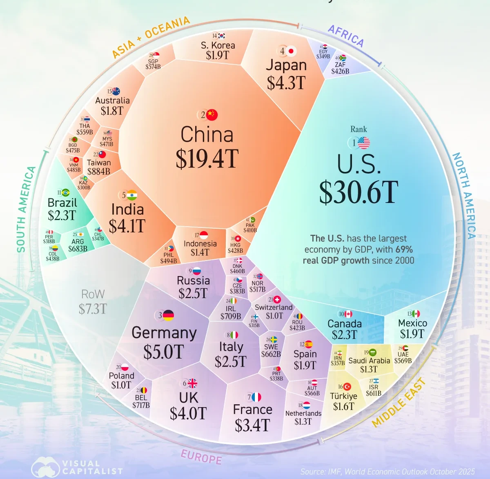
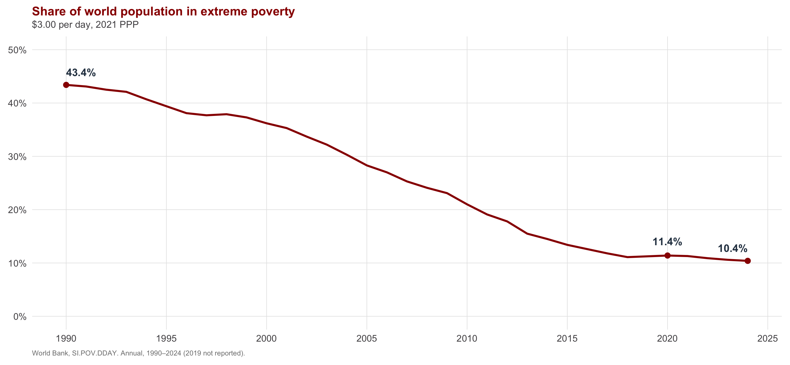
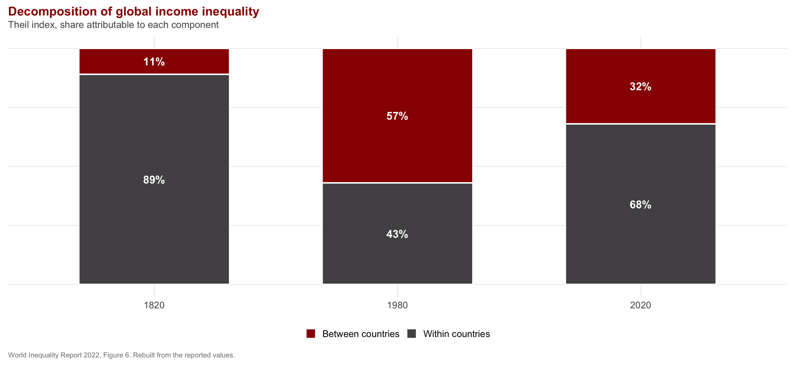
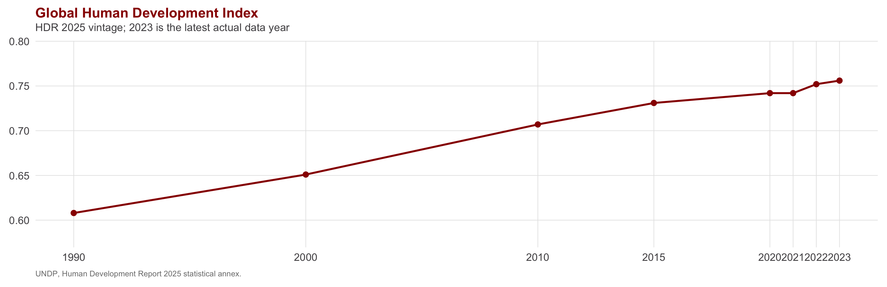
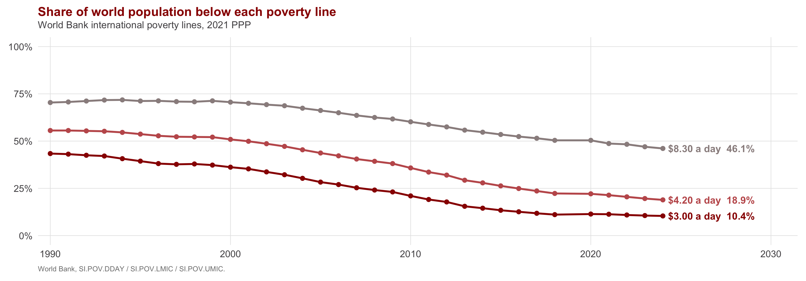
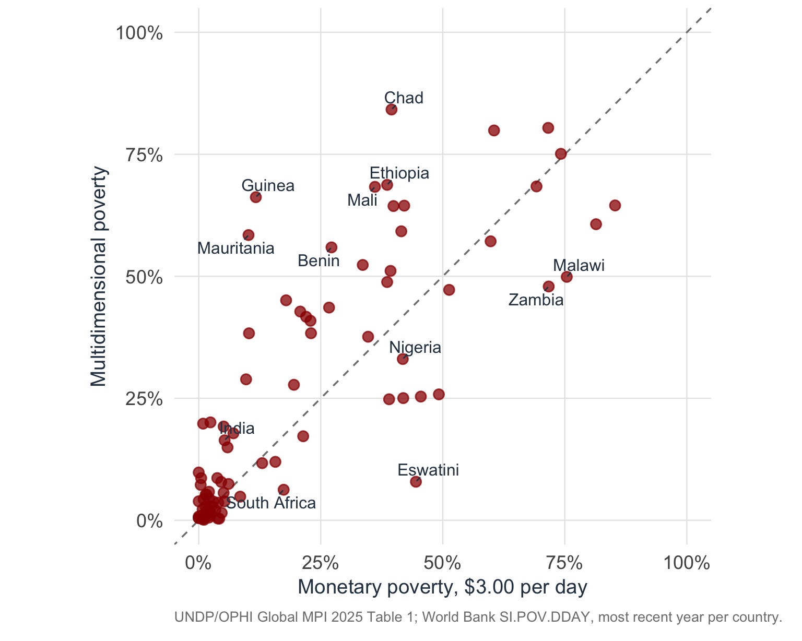

Global Development
INTL-I 522 | Day 1 — Introduction
August 24, 2026
The Central Question of the Course
Today’s Big Question
Why are some countries rich and others poor — and what, if anything, can be done about it?
| Section | What we’ll cover |
|---|---|
| 1 · Welcome | Who I am, who you are, and key course objectives |
| 2 · Logisitcs | Class Structures, your writing, and assessments |
| 3 · Types of Development | Development as an outcome, a process, and a project |
| 4 · Core Stylized Facts | Output, poverty, inequality, and human development |
| 5 · Who does development | The institutional landscape and its 2025 contraction |
Welcome
Your instructor
Professor Sarah Bauerle Danzman
I work on the politics of international investment and economic statecraft:
- Multinational firms as political actors
- The politics and welfare effects of investment regulation
- National security and economic policy, especially investment screening
- Economic statecraft and geoeconomics
The core question that motivates my scholarly interests: when are corporations more powerful than states, and how does the political struggle between states and capital owners affect ordinary people.
Office hours: M/W 2:00–3:30, GISB 1013, and by appointment
How about you?
- Your name and program, and which concentration you’re in
- What you were doing before you because a graduate student
- A place — country, region, city — that you keep coming back to in your studies/work
- Something you want to learn or a skill you want to develop in this course this semester
- A skill, habit, or goal you are working toward that has nothing to do with your studies
What this course is
INTL-522 is a core course for the MA in International Studies and a core requirement for the Global Development, Environment, and Sustainability concentration in the MIA.
We address large questions:
- Why are some countries poor while others are not?
- What theories explain the divergence, and how would we know whether one of them were right?
- What regularities show up in the historical record of rising standards of living, and what have been the consequences?
We do this to develop a set of competing accounts of how development (an extraordinarily complex process) happens, evaluate these accounts against evidence, assemble our own working “theory of change,” and assess what kinds of approaches to development as a project are more or less likely to have positive outcomes.
What this course is not
- A toolkit for project management, monitoring, or evaluation
- A regional survey
- Primarily an interpretive critique of development
What you’ll be able to do
By December you should be able to:
- Adjudicate among competing causal explanations for cross-national divergence, and identify what evidence would change your mind
- Interpret development measures critically, accounting for what each one counts, what it leaves out, who built it, and for what purpose
- Assemble, present, and defend empirical evidence about a country or a region
- State your own account of what causes development, in writing, with the causal structure made explicit
That last one is the course précis, which is your synthesized summary of the course material, with your own analytic judgment, and constructed in a way that allows you to develop an overarching narrative of your “theory of change.”
How this course works
The weekly rhythm
Before class
Session notes: the reading’s central causal claim, the evidence behind it, and one point you are prepared to discuss and unpack at length.
Plus your rotating role: Discussion Leader, Skeptic, Connector, or Practitioner.
Bring five printed copies to class.
You should allocate about 6 hours of “homework” for this class each week (a rule of thumb - 2-3 hrs of work for every credit)
In class
A short scene-setting from me (sometimes), and then we take time to compare notes.
The places where your accounts diverge provide us a natural place to start class conversation, so write honestly about anything that confuses you and identify something in the reading that truly interests you.
You are in charge of your learning, not me.
| Your role that week | What the role does |
|---|---|
| Discussion Leader | Brings 3–5 questions, opens the session, and keeps it moving |
| Skeptic | Finds the weakest link in the causal chain and argues it at full strength |
| Connector | Places the reading against earlier weeks — agreement, conflict, or gap |
| Practitioner | Asks what a government, IO, NGO, or firm should do differently if the author is right |
Roles rotate weekly, so you hold each one for both sessions of a week and cycle through all four about every four weeks.
How you’re graded
| Component | Weight and format |
|---|---|
| Final project | 30% — memo or synthetic review, scaffolded across the second half |
| Participation | 25% — prepared contribution, every session |
| Session notes & roles | 20% — credit/no-credit, best 18 of 21; late means no credit |
| Data projects | 15% — two of them, one macro and one micro |
| Course précis | 10% — workshopped Oct 12, final Dec 14 |
Full detail is on the course site, and the schedule page is authoritative for what is due when.
This week
- Wednesday, Aug 26: Sen, Development as Freedom, first half Introduction - Chapter 5). Session notes and your role, five printed copies, at the start of class.
- Monday, Aug 31: Sen, second half (Chapter 6 - end). Data Project 1 is assigned, and the region sign-up sheet goes up on Canvas.
- Get the books. Sen and Koyama & Rubin come first.
Three meanings of development
What do we mean when we talk about Development?
Outcome
A state of affairs at a point in time: income, health, schooling, what people are actually able to do.
This is measurable and comparable across countries, but doesn’t explain why countries are at a particular level of development.
Process
Structural transformation over time — sectoral shift, urbanization, demographic transition, the slow accumulation of state capacity.
Explanation for why, when, and how this change occurs.
Project
A deliberate intervention by actors who claim the authority to direct someone else’s trajectory.
Requires actors to undertake the project (design, bankrolling, implementation)
Generates politics
How are we approaching development?
A claim like “development failed in Africa” might mean that outcomes are bad, or that the transformation stalled, or that the interventions did not work. Those are three separate claims, and I’ve designed this course to help you interrogate each of them.
The six books we will read all address different components of development:
- Sen conceptualizes development to help us measure it better. You can’t do this without making a series of normative judgments!
- Koyama & Rubin provide the most comprehensive, synthetic, historical view of what lead to the divergence in development trajectories across “the West” and late industrializers.
- Evans is a canonical treatment of when states can effectively speed up development processes.
- Cramer, Sender & Oqubay provide a sustained look at Africa and present a heterodox approach to what the development as a project community has gotten wrong there.
- Kentikelenis & Stubbs look at how attempts by key international development organizations (IMF/World Bank) to guide development have fared
- Banerjee & Duflo shift the focus from macroeconomies to households and consider how smaller scale interventions can sum to broader development trajectories.
Economic development and human development
Growth in output per person and expansion in what people are able to do and be are related, but they are not equivalent.
- Income purchases some capabilities more reliably than others
- Two countries at similar income levels can differ substantially in life expectancy, schooling, and freedom from arbitrary power
- Income is distributed unevenly within countries, and even within families
Sen’s contribution is to move beyond utilitarian conceptions of aggregate welfare and libertarian conceptions of absolute politicla freedom to instead think of income as one component of capabilities and how we might go about measuring development from a capabilities rather than income perspective
Keep that in mind through the measures we are about to look at, most of which are built on income.
What Are the Stakes?
A $117 Trillion System
Scale:
- 80x larger than 1960
- Top 10 economies = 67% of total
Inequality:
- All of Africa (54 countries) ≈ Texas
- India (1.4B) ≈ UK (67M) in GDP — despite ~20x the population
Source: IMF World Economic Outlook (Oct 2025)

Extreme poverty over three decades

- June 2025: the World Bank changed the threshold for extreme poverty from $2.15/day (2017 PPP) to $3.00/day (2021 PPP)
- Same year, same household surveys: 713 million below the old line, 838 million below the new
Where extreme poverty is concentrated
By region
- Sub-Saharan Africa: 16% of world population, 67% of the extreme poor
- Share rising — poverty fell faster elsewhere
- Global aggregates increasingly describe one region
By fragility
- 37 fragile or conflict-affected economies
- 15% of world population, 50% of the extreme poor
- Poverty rate 40% inside, 6% elsewhere
- Projected ~60% of the extreme poor by 2030
Increasingly a question of where states cannot govern their own territory, which calls for different remedies than slow growth does.
Two kinds of inequality, moving in opposite directions

Human development

- Geometric mean of health, education, income
- Global HDI 0.756; inequality-adjusted 0.590, so 22% is lost to distribution
- 2024’s projected increase is the smallest since 1990
- Low-HDI to very-high-HDI gap has widened four years running
The same world, counted at four thresholds

- Excluded from chart - The Multidimensional Poverty Index, counts deprivations directly: 1.1 billion people, 18.3% of the 6.3 billion it covers
- It only covers 109 countries, so not directly comparable
Comparing MDP to Income Threshold

- One point per country; dashed line = the two measures agree
- 57 of 89 sit above it — more people deprived than income-poor
Who does development
The landscape
Multilateral
- World Bank Group — $161.9B committed in FY2025; IDA21 carries $100B for FY2026–28
- IMF
- Regional banks: ADB around $40B, IDB $23.4B, EBRD €16.6B, AfDB $11B
- AIIB and the New Development Bank, the China-linked entrants, smaller so far but growing
UN system
- UNDP: $4.9B in 2024, of which only 12% is flexible core funding
Bilateral — the larger channel
- DAC ODA 2025: $126.4B bilateral (72.5%) vs $47.9B multilateral core
- Of that bilateral total, $23.0B never leaves the donor — in-donor refugee costs, 13.2% of all ODA
- Non-DAC providers add $13.3B
Private
- Gates Foundation: $9B annual payout, spending down by 2045
- NGOs, private capital, blended finance
Larger than all official flows combined
- Remittances to low- and middle-income countries: $685B in 2024
DAC figures: OECD, Preliminary ODA levels in 2025, April 2026. Multilateral counts core contributions only — earmarked money routed through multilaterals is booked as bilateral.
The 2025 contraction in development finance
- USAID: stop-work order January 2025, dissolved into State on July 1, over 80% of programs terminated
- US foreign assistance: $73.5B (FY24) → $47.3B (FY25), down 35.6%, lowest since 2004
- DAC ODA: down 23.1% in real terms to $174.3B — the largest annual decline on record
- Donor giving now 0.26% of combined GNI
- Cuts: US −56.9% · Germany −17.4% · France −10.9% · UK −10.8%
- Still meeting 0.7%: Norway, Luxembourg, Sweden, Denmark
Why explanation matters for practice
- Development is a complex system: many causes, long lags, two-way feedback, non-exchangeable units
- Identification is hard, and development is likely contingent
- Every intervention still rest on a theory (or “theory of change”) — loan conditions, cash transfers, industrial policy
- Left implicit, that theory goes untested
- Making it explicit, then testing it against evidence, can improve intervention
Looking ahead
- Wednesday, August 26: Sen, Development as Freedom, first half (Intro - Chapter 5)
- Session notes plus your assigned role, five printed copies, at the start of class
- While you read, focus especially on how Sen defines poverty and also how conceptualization and measurement require normative choices

INTL-I 522 | Global Development